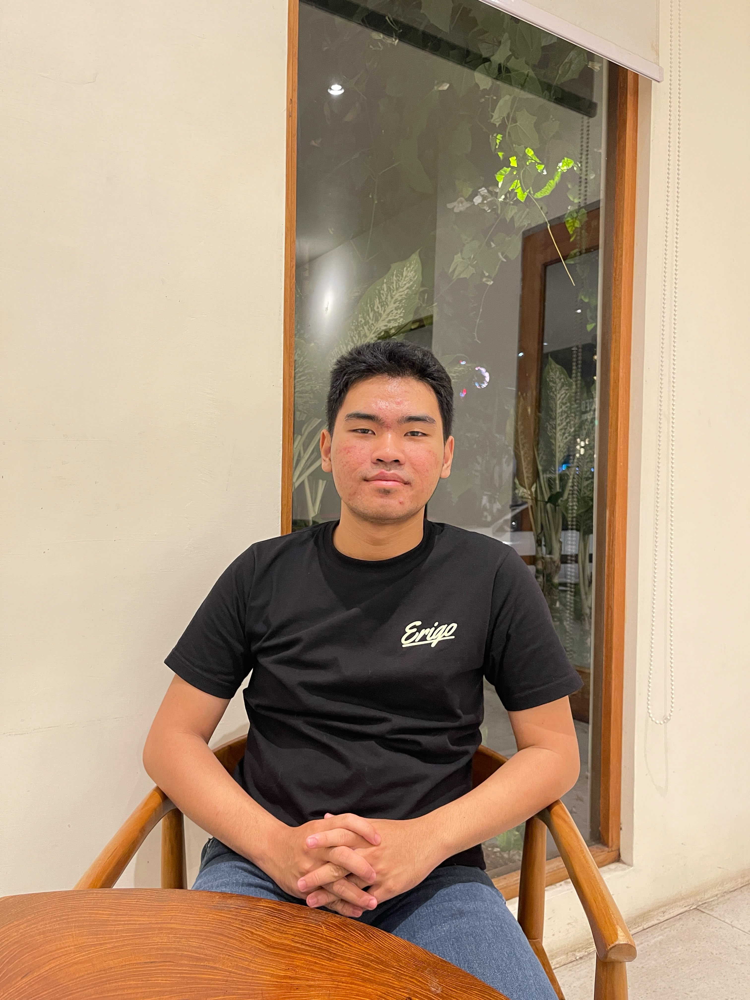

Halo, saya Dheva Alvian Alfarizzy Excellent, mahasiswa Program Studi Rekayasa Perangkat Lunak di Institut Teknologi Sepuluh Nopember. Saya memiliki ketertarikan pada dunia teknologi dan pengembangan perangkat lunak, serta senang mempelajari berbagai hal baru untuk mengembangkan kemampuan diri. Di luar kegiatan akademik, saya menikmati bermain piano, fotografi dan videografi, serta memiliki ketertarikan pada investasi dan trading. Saya percaya bahwa proses belajar dan pengalaman baru merupakan bagian penting dalam mengembangkan diri dan mencapai tujuan di masa depan.
Sebuah aplikasi dalam bidang industri yang digunakan untuk melakukan pencatatan stok barang masuk, barang keluar, dan stok yang ada di gudang.
Sebuah gudang memiliki banyak jenis barang yang harus dipantau setiap hari. Selama ini, pencatatan jumlah barang masuk dan keluar masih dilakukan secara manual menggunakan buku atau spreadsheet. Cara tersebut membuat petugas kesulitan mengetahui jumlah stok terbaru dan berisiko terjadi kesalahan dalam pencatatan. Sebagai contoh, ketika terdapat 50 barang masuk dan kemudian 20 barang keluar, petugas harus memperbarui jumlah stok secara manual. Jika pencatatan terlambat atau terjadi kesalahan, jumlah stok yang tercatat dapat berbeda dengan jumlah barang yang sebenarnya ada di gudang. Petugas juga kesulitan mengetahui barang mana yang stoknya sudah hampir habis. Berdasarkan permasalahan tersebut, dibuat sebuah aplikasi mobile pencatatan stok gudang yang memungkinkan petugas untuk mencatat data barang, barang masuk, dan barang keluar. Setiap transaksi akan memperbarui jumlah stok secara otomatis. Aplikasi juga dapat menampilkan riwayat transaksi dan memberikan informasi ketika stok suatu barang sudah mencapai batas minimum.
Solusi yang ditawarkan adalah membuat aplikasi mobile pencatatan dan pengelolaan stok barang gudang. Aplikasi ini digunakan untuk membantu petugas dalam mencatat dan memantau kondisi stok secara lebih mudah dan teratur. Petugas dapat memasukkan data barang, mencatat barang masuk dan barang keluar, serta melihat jumlah stok yang tersedia. Setiap transaksi akan secara otomatis memperbarui jumlah stok sehingga mengurangi kesalahan akibat perhitungan manual. Aplikasi juga menyediakan riwayat transaksi untuk mengetahui aktivitas setiap barang dan notifikasi/peringatan stok minimum ketika jumlah barang mulai menipis. Dengan solusi ini, petugas dapat mengetahui kondisi stok secara lebih cepat dan akurat tanpa harus melakukan pencatatan menggunakan buku atau spreadsheet secara manual..
Berdasarkan permasalahan yang ada, pencatatan stok barang secara manual dapat menyebabkan kesalahan dalam perhitungan, keterlambatan pembaruan data, serta kesulitan dalam memantau kondisi stok. Oleh karena itu, dibuat aplikasi mobile pencatatan dan pengelolaan stok barang gudang sebagai solusi untuk mempermudah proses tersebut. Aplikasi ini memungkinkan petugas untuk mengelola data barang, mencatat barang masuk dan keluar, melihat jumlah stok secara otomatis, serta memantau riwayat transaksi. Aplikasi juga dapat memberikan peringatan ketika stok barang sudah mencapai batas minimum. Dengan adanya aplikasi ini, proses pengelolaan stok diharapkan menjadi lebih mudah, cepat, teratur, dan akurat, sehingga dapat membantu petugas dalam mengontrol persediaan barang dan mengurangi risiko kesalahan pencatatan.